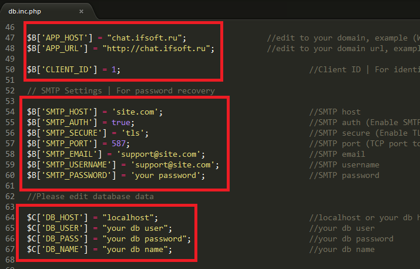

“Dating App for iOS” Documentation by “Demyanchuk Dmitry” v1.8
“Dating App for iOS”
Created: 08/03/2018
By: Demyanchuk Dmitry
Email: raccoonsquare@gmail.com
Thank you for purchasing my Dating App for iOS If you have any questions that are beyond the scope of this help file, please feel free to email via my user page contact form Codecanyon page or Facebook Page. Thanks so much!
Table of Contents
- Overview
- Step by Step
- PHP Installation Process
- XCode Installation Process
- How to add emoji support?
- How to update?
- Adding a new language (WEB SITE)
1) Overview - top
Advice:
- To upload files to the server, use specialized programs, such as: FileZilla
- To edit a php file has special editors are, for example: Sublime Text, phpStorm, Notepad ++. Do not use the standard editor Windows: Notepad! Notepad can change the encoding of a php file and you'll get an error!
This is important, please read:
error_reporting:
Default error_reporting set to E_ALL.
To set error_reporting to 0 - edit the file /core/init.inc.php
All user data is cleaned with the following code (functions can be edited in the file: class/class.helper.inc.php):
static function clearText($text) {
$text = trim($text);
$text = strip_tags($text);
$text = htmlspecialchars($text);
return $text;
}
static function clearInt($value) {
$value = intval($value);
return $value;
}
2) Step by Step - top
Here I will describe the basic sequence of steps.
For FCM (Firebase Cloud Messages) and Apple in-app purchases:
Server part:
- Prepare hosting. Create an empty (new) database, etc.
- Upload files to server. Example, See here: http://ifsoft.co.uk/help/how_to_upload_script_on_the_server/
- Configure web part config (server/config/db.inc.php). See here
- Enter in browser: yousite.com/install.php. Install script
XCode App:
- Open the terminal window in the project directory and type: pod install (cocoapods must be installed on you mac: https://cocoapods.org/)
- Open project in XCode using SocialApp.xcworkspace file
- Rename project (I recommend: do not change the SocialApp folders name and Project name). How to rename the project - there are many ways. I use - http://stackoverflow.com/a/35500038
- Configure App config (Constants.swift). See here
- Run App for test.
I describe only main steps! For more information about configuring in documentation and comments (in config files)
Some information:
- I do not use local server for testing and development. Only real server (hosting).
- I use Linux hosting with apache, php and MySQL
- I recommend: do not change the SocialApp folders name and Project name.
- Most users choose GoDaddy Hosting
- Server part is not working correctly on hosting for Wordpress (maybe a problem in .htaccess files from Worpress hosting)
- I do not use emulators (Android Apps). I use only real devices for testing and development. Reason: for example, FCM and Apple Push Notifications does not work on emulator (sometimes FCM works correctly on emulators)
- I always use latest version of XCode
- You need to have CocoaPods on your Mac installed
3) Php Installation Process - top
Configure the server part with fast three easy steps!
How to upload script to the server, read here: How to upload script to the server
- Open and edit config/db.inc.php (edit the data on the selected image)
- Upload the script to the root server.
- Open in browser: http://your_site.com/install.php - You create the first user (administrator account), which will be open full access to the admin panel.
- Admin Panel Login Page: http://your_site.com/admin/login.php
$B['CLIENT_ID'] = 1; $B['APP_URL'] = "edit to your domain example: http://yourdomain.com"; $C['DB_HOST'] = "localhost or your db host"; $C['DB_USER'] = "your db user"; $C['DB_PASS'] = "your db password"; $C['DB_NAME'] = "your db name";
If you correctly follow the three simple steps, then the browser will automatically redirect you to the admin panel!
4) XCode Installation Process - top
Configure XCode project with easy steps!
- Open and edit Constants.swift (edit the data on the selected image)
- Bundle Identifier and App Name (edit the data on the selected image)
- I recommend: do not change the SocialApp folders name and Project name.

5) How to add emoji support? - top
Caution! It is important!
For correct storage emoji characters in the database requires MySQL version not lower than 5.5.3! Before any action is required to create a backup of all databases, a comparison that will change!
- Find out which version of MySQL is running on your server. Character set utf8mb4 introduced in MySQL starting from version 5.5.3, on this, you'll need to update your version of MySQL server if it is lower than this, or ask it to do your system administrator.
- Type in your browser: http://yousite.com/enable_emoji.php and press Enter (Database will be automatically corrected).
-
- Open the file /core/init.inc.php.
- Find the line (29): $dbo = new PDO ($dsn, DB_USER, DB_PASS, array (PDO::MYSQL_ATTR_INIT_COMMAND => "SET NAMES utf8"));
- Replace line to: $dbo = new PDO ($dsn, DB_USER, DB_PASS, array (PDO::MYSQL_ATTR_INIT_COMMAND => "SET NAMES utf8mb4"));
- Save the file.
-
- Open the file /class/class.db_connect.inc.php.
- Find the line (31): $this->db = new PDO($dsn, DB_USER, DB_PASS, array(PDO::MYSQL_ATTR_INIT_COMMAND => "SET NAMES utf8"));
- Replace line to: $this->db = new PDO($dsn, DB_USER, DB_PASS, array(PDO::MYSQL_ATTR_INIT_COMMAND => "SET NAMES utf8mb4"));
- Save the file.
- If done correctly and MySQL version not lower than 5.5.3: Everything will work!
I did not support the default character set utf8mb4, because some users are on their servers MySQL version lower than 5.5.3
Correction is subject only: messages, posts and comments tables! This means that will add support emoji only in personal messages, posts and comments!
6) How to update? - top
Caution! It is important!
Folders "XCode Project (client)" and "PHP Engine (server)" - Always include the newest, full source code!
Hello.
- Update files from a folder Update_1.7_to_1.8 (Only if you are upgrading from version 1.7 to version 1.8)
- Open the terminal window in the project directory and type: pod install (cocoapods must be installed on you mac: https://cocoapods.org/)
- Configure you AdMob. See here: http://ifsoft.co.uk/help/how_to_get_banner_ad_unit_id_from_admob_ios/
- After upgrading server side files Enter in browser: yousite.com/update.php for database correction
- Open project in XCode using SocialApp.xcworkspace file
Be careful! "Update_1.7_to_1.8" folder contains only changed and new files.
7) Adding a new language (WEB SITE) - top
Add a new language is very easy! Let's see an example with the addition of the German language:
- Copy the file lang/en.php to lang/de.php;
- Make translating text strings in the file lang/de.php to German;
- Open the file config/db.inc.php and at the end of the file add the line: $ LANGS ['Deutsch'] = "de";
A) PHP Engine structure - top
The structure of the project consists of four main directories:

1. admin - directory contains admin panel html files.
2. api - directory contains methods that are called from the application.
3. class - directory includes php class files.
4. common - directory includes header, footer, topbar files for admin panel.
5. config - directory contains the files needed for work and application settings: configuration files.
6. core - directory contains the files needed for work and application settings: configuration files.
7. css - directory include these files: css.
8. img - directory include these files: image files.
9. js - directory include these files: js.
B) FAQ - top
1. Where to change the time string (1m ago, 10h ago)?
2. Why can not I send messages gcm?
3. Why can not I upload a picture?
4. Where to change the text for the sections Acknowledgements and Terms of Use?
api\v2\method\app.thanks.inc.php
api\v2\method\app.terms.inc.php
5. What is CLIENT_ID?
6. Does not work password recovery function with hotmail and yahoo mail??
Once again, thank you so much for purchasing this application. As I said at the beginning, I'd be glad to help you if you have any questions relating to this theme. No guarantees, but I'll do my best to assist. If you have a more general question relating to the application on CodeCanyon, you might consider visiting the forums and asking your question in the "Item Discussion" section.
Demyanchuk Dmitry